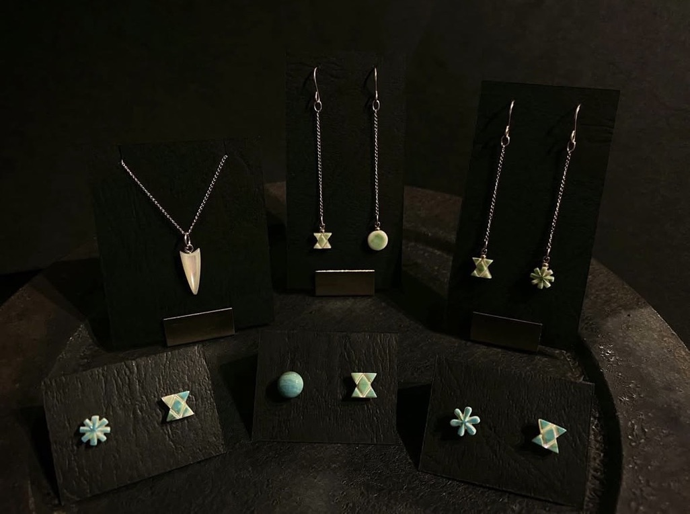
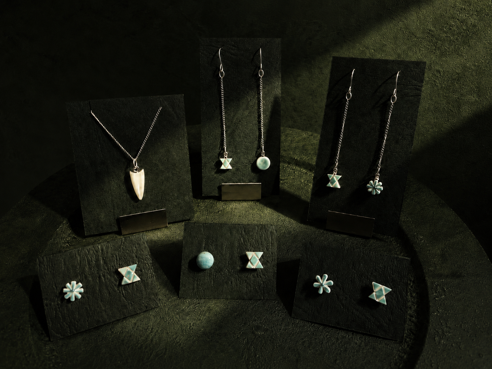
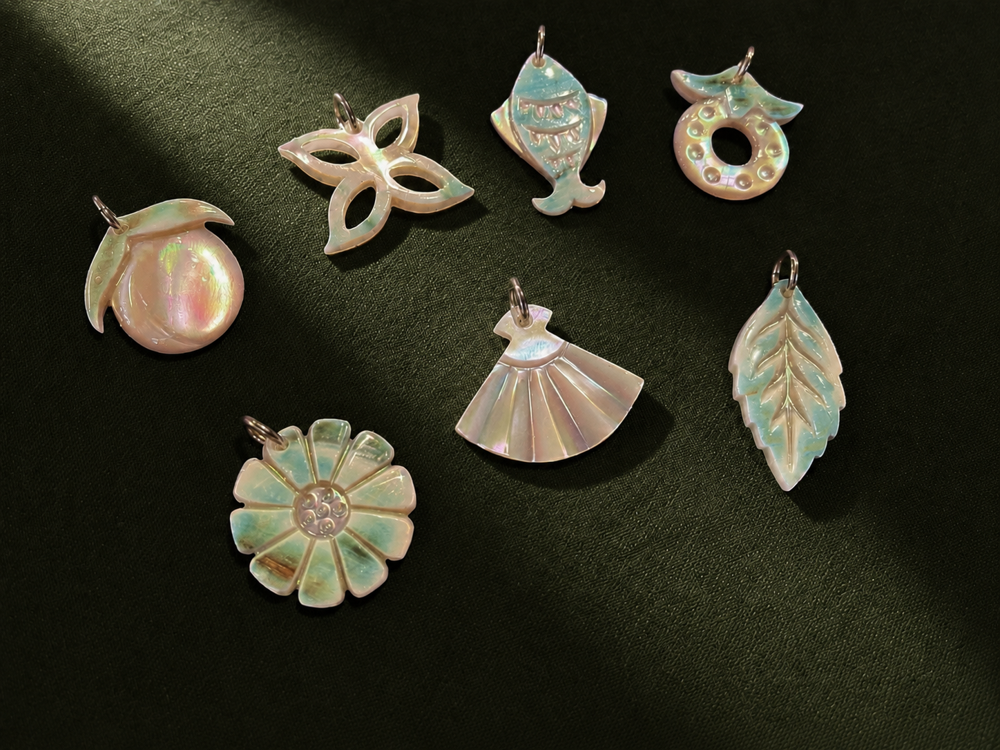
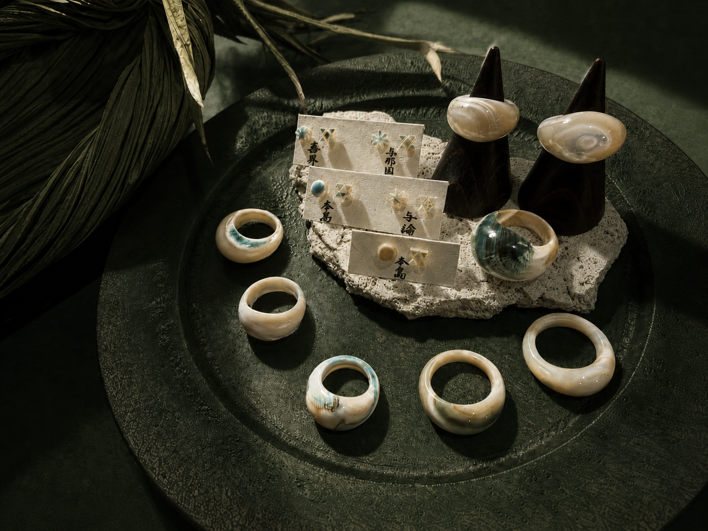

沖縄の自然と祈りを宿すアクセサリー
沖縄の自然と祈りを、身にまとう。
海、風、光、大地、植物、石。沖縄の自然に宿る気配と、感謝と愛の“うむい”をかたちにした、静かなお守りのようなアクセサリー。
Collection
自然の気配を、日々のそばへ
商品写真はカテゴリごとに役割を分け、質感、手仕事、身につける意味が伝わる順で構成しています。
Brand Concept
沖縄の自然と祈りを宿すものづくり
沖縄の自然が育んできた恵み。海、風、光、大地、植物、石。そのすべてに宿るいのちの気配を感じながら、自然と人が調和し、共に生き続けることを願って。
私たちは、目に見えるものだけではなく、祈り、感謝、愛、そして森羅万象とのつながりを大切にしています。
身につける人の心にそっと寄り添い、日々の中で自分自身へ還るような、静かなお守りのような存在でありたい。
感謝と愛の“うむい”をかたちにし、沖縄の自然と祈りを宿したものづくりを届けます。

Choose
身につけたい祈りを、選ぶ
購入ページへ進むための導線です。実URL確定後に各リンクを差し替えてください。
Order Made
想いをかたちにする、オーダーメイド
特別な祈りや贈りもの、大切な節目に。素材やモチーフ、込めたい想いを伺いながら、あなただけの一点をお仕立てします。
こんな方におすすめ
- 節目の贈りものを探している方
- 自然や祈りを身につけたい方
- 一点ものとして想いを込めたい方
相談の流れ
- ご相談
- ヒアリング
- 制作・お渡し
価格や納期は内容により異なります。詳細はご相談ください。
オーダーメイドを相談する
Stockist
お手に取れる場所
取扱店舗の情報は仮置きです。店舗名、エリア、営業情報、詳細リンクを確定後に差し替えてください。
- 店舗名
- 取扱店舗名を入力
- エリア
- 沖縄県内、またはオンライン
- 営業情報
- 営業日・営業時間は要確認
News
展示会・ワークショップのお知らせ
イベント写真が未用意の場合は、架空の人物写真を使わず、商品ディスプレイで世界観を保ちます。予定が未定の期間はInstagram導線として運用できます。
次回イベント情報は準備中です。
Instagramで最新情報を見る